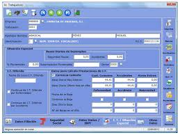
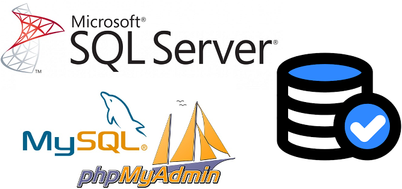

Noticia

Servicios
Nuestros servicios incluyen la creación de:
֎ Sitios web dinámicos con conectividad a bases de datos locales o remotas
֎ Tiendas en linea de comercio electrónico.
֎ Aplicaciones web para el manejo de entidades en sucursales de empresas en cualquier tiempo y lugar
֎ Aplicaciones de escritorio dinámicas con conectividad a bases de datos locales o remotas
֎ Posicionamiento WEB - SEO
Leer más
NUESTRAS FORTALEZAS
PÁGINAS WEB
֎Sitio WEB para iniciar con la publicidad de un negocio, ya sea que ofrezca productos o servicios. ֎Posteriormente se puede modificar o ampliar a otro con más nivel de detalle.
֎Puede tener acceso privilegiado para clientes y administradores con posibilidad de recuperación de claves de acceso.
֎Integración entre las diferenets páginas web para evitar redundancia en la información. ֎Administración de usuarios, contactos, pedidos, etc. ֎Conexión desde y hacia redes sociales. ֎Campañas Google Ads.
TIENDAS EN LÍNEA
El comercio electrónico sigue en crecimiento en Colombia. Proyectate con Prisma Intec y elije el mejor plan para construir tu Tienda en Línea. Tu sitio web en Internet, te permite comunicación asertiva con tus posibles clientes inspirando mayor confianza
y seguridad, además de hacer que tu negocio se vea más formal, seguro y profesional. Llevamos cualquier idea de negocio a la nube. Pasarela de pago en linea con Mercadopago.
POSICIONAMIENTO WEB - SEO

El posicionamiento SEO (por sus siglas en inglés Search Engine Optimization) son un conjunto de técnicas que se aplican en una página web con el objetivo de mejorar su posición y su visibilidad en los motores de búsqueda
de los principales navegadores. En otras palabras, podemos definir el SEO como un proceso enfocado a situar una determinada página web en las primeras posiciones de las páginas de los resultados de búsqueda ante una consulta específica
de un usuario.
APLICACIONES WEB
Son aplicaciones que se alojan en la nube, es decir se encuentran en otra computadora(Servidor) al que se accede mediante la red e internet. Nuestras aplicaciones web son programas que realizan casi cualquier tarea que necesite digitalización de información,
esto es, mediante la creación, modificación, eliminación y busqueda en bases de datos.
propias o remotas. útiles para llevar información empresarial de todo tipo: Comercial, Industrial o de Servicios.
APLICACIONES DE ESCRITORIO
Una
aplicación de escritorio es aquella que se instala en la computadora y se puede ejecutar sin usar internet. Al igual que las aplicaciones web realizan casi cualquier tarea que necesite digitalización de información, esto
es, mediante la creación, modificación, eliminación y busqueda en bases de datos locales. Útiles para llevar información empresarial de todo tipo: Comercial, Industrial o de Servicios.
BASES DE DATOS

Una base de datos se encarga de almacenar datos y de conectarlos entre sí en una unidad lógica. Es un conjunto de datos estructurados que pertenecen a un mismo contexto y se utilizan para administrar de forma electrónica
gran cantidad de información. SQL Server, MySQL, NoSQL, Mongo, Etc. son programas denominados sistemas gestores de bases de datos que permiten almacenar y posteriormente acceder a los datos de forma rápida y estructurada.